timing <- params$time_interval
setwd("~/Documents/GitHub/Bglandula_FHL_energetics/code/save_workspace")
if(timing == 1){
load("my_work_space_time1_20210409.RData")
timing <- 1}
if(timing == 2){
load("my_work_space_time2_20210409.RData")
timing <- 2}model_graphs
Set up workspace
Set the interval for single interval plots
Time 1 is from February to August. Time 2 is from August to February.
Calculate average barnacle sizes (length, cm)
mean(as.numeric(Iter.len.2[1,])) #0.23[1] 0.2319636mean(as.numeric(Iter.len.1[1,])) #0.22[1] 0.2171867Pick representative barnacles that are close to these sizes
# Iter.len.1[1,Iter.len.1[1,]>=.215&Iter.len.1[1,]<=.235] #V27 is .222, V110 is .220, V143 is .229
# Iter.len.1[1, Elevation.list[[1]]=="Mid"]#108-143
# Iter.len.1[1, Elevation.list[[1]]=="Low"]#
#
#
# Iter.len.2[1,Iter.len.2[1,]>=.205&Iter.len.2[1,]<=.235]
# Iter.len.2[1, Elevation.list[[2]]=="Upper"]#1-92 - V1 is 0.205, V32 is 0.221
# Iter.len.2[1, Elevation.list[[2]]=="Mid"]#93-108 - V94 is 0.20, V100 is 0.23
# Iter.len.2[1, Elevation.list[[2]]=="Low"]#109-138 - V124 is 0.209, V121 is 0.225
#
#
# Iter.len.2[1,Iter.len.2[1,Elevation.list[[2]]=="Mid"]>=.20&Iter.len.2[1,Elevation.list[[2]]=="Mid"]<=.225] #V114 is 0.222
# Iter.len.2[1,Iter.len.2[1,Elevation.list[[2]]=="Low"]>=.225&Iter.len.2[1,Elevation.list[[2]]=="Low"]<=.23]
#
#
# Iter.len.2[1,Elevation.list[[2]]=="Mid"]
# Iter.len.2[1,Elevation.list[[2]]=="Low"]
par(mar = c(1,1,1,1)+.1)
par(oma = c(1,4,1,1))
# Set representative barnacles ####
elev <- c(4,110,147)
elev.1 <- elev
elev <- c(36,100,121)
elev.2 <- elev
if(timing == 1){
elev <- elev.1
datetime_int <- datetimes[[1]]
Iter.len.1[1,elev] #0.21, 0.22, 0.20
cutoff <- 189 #This should be 188 or 189 but maybe I'm cutting off points twice?
length(Iter.len.1[,elev[1]])/96
}
if(timing ==2){
elev <- elev.2
datetime_int <- datetimes[[2]]
length(Iter.len.2[,elev[1]])/96
cutoff <- 186 #This should be 198 - we are missing 8 days?
#cutoff <- 196
head(Iter.len.2[,elev]) #V95 (mid) was a little small, but changed rep barnacles in beginning of April
} V36 V100 V121
1 0.2298567 0.2302311 0.225676
2 0.0000000 0.0000000 0.000000
3 0.0000000 0.0000000 0.000000
4 0.0000000 0.0000000 0.000000
5 0.0000000 0.0000000 0.000000
6 0.0000000 0.0000000 0.000000Elev.abbrev.list <- list(elev.1, elev.2) #Need to run timing 1 and 2Summary statistics
#Upper emergence time
no.na.water <- water.temp[!is.na(water.temp[,2]),2]
no.na.air <- air.temp[!is.na(air.temp[,2]),2]
length(no.na.air)/(length(no.na.water)+length(no.na.air))*100[1] 72.18116#Mid emergence time
no.na.water <- water.temp[!is.na(water.temp[,3]),3]
no.na.air <- air.temp[!is.na(air.temp[,3]),3]
length(no.na.air)/(length(no.na.water)+length(no.na.air))*100[1] 48.00277#Lower emergence time
no.na.water <- water.temp[!is.na(water.temp[,4]),4]
no.na.air <- air.temp[!is.na(air.temp[,4]),4]
length(no.na.air)/(length(no.na.water)+length(no.na.air))*100[1] 33.41369air.temp[max(!is.na(air.temp[,2])),1][1] "2017-08-07 01:00:00 GMT"air.temp[min(!is.na(air.temp[,2])),2]numeric(0)#max(no.na.air)
#min(no.na.water)Temp graphs
#pdf("temps_15_min_int1and2.pdf", width=6.5, height=1.5)
par(mfrow = c(1,3))
par(mar = c(1,4,1,1)+.1)
par(oma = c(1,1,1,1))
par(mfrow = c(1,3))
plot(air.temp[,4], pch = ".", col = "blue", ylim =c(0,35), ylab = "Temperature deg C")
points(water.temp[,4], pch = ".")
title("Low")
plot(air.temp[,3], pch = ".", col = "blue", ylim =c(0,35), ylab = "")
points(water.temp[,3], pch = ".")
title("Mid")
#points(intake_15min_scaled[,2], col = "green", pch = ".")
plot(air.temp[,2], pch = ".", col = "blue", ylim =c(0,35), ylab = "")
points(water.temp[,2], pch = ".")
#points(intake_15min_scaled[,3], col = "green", pch = ".")
title("Upper")
#dev.off()#Convert from UCT to PST
min(datetime_int)[1] "2018-08-15 GMT"max(datetime_int)[1] "2019-03-01 GMT"which(datetime_int>=as.POSIXct("2018-08-01 00:00:00")&datetime_int<=as.POSIXct("2018-08-02 00:00:00"))integer(0)conv <- 17105
ts[1] 96#i_seq <- 100
dim(Iter.air)[1] 19009 138#And then again last day (repeat)
end[1] 188i_seq <- 2
i <- ts*(i_seq-1)+1
j <- i+ts-1
f <- j+1
temp_i.w <- Iter.water[(i+conv):(j+conv),]
temp_i.a <- Iter.air[(i+conv):(j+conv),]
food_i <- Iter.food[(i+conv):(j+conv)]
cost_15min_dat <- as.data.frame(cost_15min[(i+conv):(j+conv),])
intake_15min_scaled_dat <- as.data.frame(intake_15min_scaled[(i+conv):(j+conv),])
pred_expose_30_dat <- as.data.frame(pred_expose_30[(i+conv):(j+conv),])
Hour <- seq(1, to = 96*15, by = 15)/60if(timing == 2){
#setwd("~/Box/Sarah and Molly's Box/FHL data/plots/Interval 2")
#pdf("within_day_rates_15_min_int2.pdf", width=6.5, height=1.5)
par(mfrow = c(1,3))
par(mar = c(1,4,1,1)+.1)
par(oma = c(1,1,1,1))
par(mfrow = c(1,3))
par(mfrow = c(1,3))
plot(Hour,cost_15min_dat[,elev[3]], ylim = c(0,.35), col = "blue", type = "l", ylab = "Physiological Rate (J per 15min)",bty = "n")
points(Hour,intake_15min_scaled_dat[,elev[3]], col = "green", type = "l",bty = "n")
points(Hour,pred_expose_30_dat[,elev[3]], col = "darkorchid4", type = "l",bty = "n")
plot(Hour,cost_15min_dat[,elev[2]], ylim = c(0,.35),col = "blue", ylab = "", type = "l",bty = "n")
points(Hour,intake_15min_scaled_dat[,elev[2]], col = "green", type = "l",bty = "n")
points(Hour,pred_expose_30_dat[,elev[2]], col = "darkorchid4", type = "l",bty = "n")
plot(Hour,cost_15min_dat[,elev[1]], ylim = c(0,.35),col = "blue",
ylab = "", type = "l",bty = "n")
points(Hour,intake_15min_scaled_dat[,elev[1]], col = "green", type = "l")
points(Hour,pred_expose_30_dat[, elev[1]], col = "darkorchid4", type = "l")
#dev.off()
}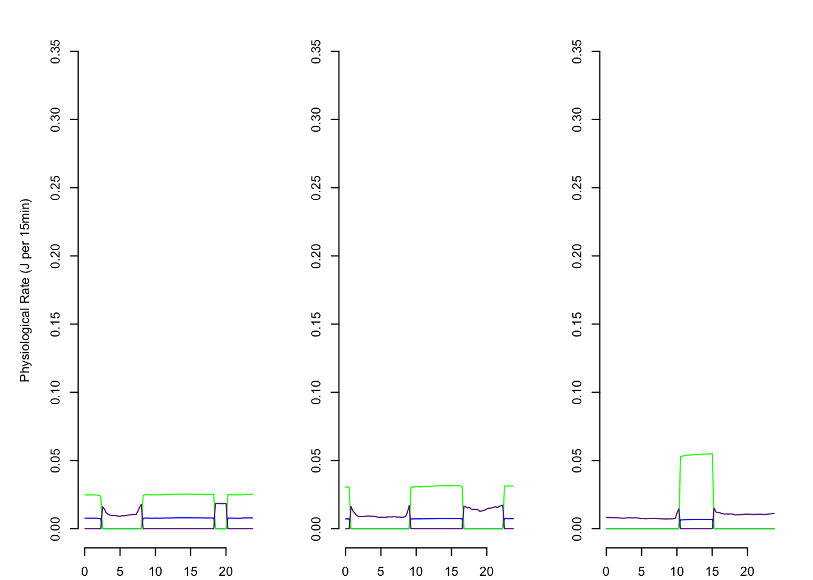
if(timing == 1){
# setwd("~/Box/Sarah and Molly's Box/FHL data/plots/Interval 1")
#pdf("within_day_rates_15_min_int1.pdf", width=6.5, height=1.5)
par(mfrow = c(1,3))
par(mar = c(1,4,1,1)+.1)
par(oma = c(1,1,1,1))
par(mfrow = c(1,3))
par(mfrow = c(1,3))
plot(Hour,cost_15min_dat[,elev[3]], ylim = c(0,.15),col = "blue", type = "l", ylab = "Physiological Rate (J per 15min)",bty = "n")
points(Hour,intake_15min_scaled_dat[,elev[3]], col = "green", type = "l",bty = "n")
points(Hour,pred_expose_30_dat[,elev[3]], col = "darkorchid4", type = "l",bty = "n")
plot(Hour,cost_15min_dat[,elev[2]], ylim = c(0,.15), col = "blue",ylab = "", type = "l",bty = "n")
points(Hour,intake_15min_scaled_dat[,elev[2]], col = "green", type = "l",bty = "n")
points(Hour,pred_expose_30_dat[,elev[2]], col = "darkorchid4", type = "l",bty = "n")
plot(Hour,cost_15min_dat[,elev[1]], ylim = c(0,.15),col = "blue",
ylab = "", type = "l",bty = "n")
points(Hour,intake_15min_scaled_dat[,elev[1]], col = "green", type = "l")
points(Hour,pred_expose_30_dat[, elev[1]], col = "darkorchid4", type = "l")
#dev.off()
}if(timing ==1){
# setwd("~/Box/Sarah and Molly's Box/FHL data/plots/Interval 1")
#pdf("within_day_temps_15min_int1.pdf", width=6.5, height=1.5)
par(mfrow = c(1,3))
par(mar = c(1,4,1,1)+.1)
par(oma = c(1,1,1,1))
par(mfrow = c(1,3))
plot(Hour,temp_i.a[,elev[3]],ylim = c(2,30),type = "l",bty = "n",ylab = "Temp", col = "darkorchid4")
points(Hour,temp_i.w[,elev[3]], col = "blue",type = "l",bty = "n",ylab = "")
plot(Hour,temp_i.a[,elev[2]],ylim = c(2,30),type = "l",bty = "n",ylab = "", col = "darkorchid4")
points(Hour,temp_i.w[,elev[2]], col = "blue",type = "l",bty = "n",ylab = "")
plot(Hour,temp_i.a[,elev[1]], ylim = c(2,30),type = "l",bty = "n",ylab = "", col = "darkorchid4")
points(Hour,temp_i.w[,elev[1]], col = "blue",type = "l",bty = "n",ylab = "")
#dev.off()
}
if(timing ==2){
# setwd("~/Box/Sarah and Molly's Box/FHL data/plots/Interval 2")
#pdf("within_day_temps_15min_int2.pdf", width=6.5, height=1.5)
par(mfrow = c(1,3))
par(mar = c(1,4,1,1)+.1)
par(oma = c(1,1,1,1))
par(mfrow = c(1,3))
plot(Hour,temp_i.a[,elev[3]],ylim = c(2,30),type = "l",bty = "n",ylab = "Temp", col = "darkorchid4")
points(Hour,temp_i.w[,elev[3]], col = "blue",type = "l",bty = "n",ylab = "")
plot(Hour,temp_i.a[,elev[2]],ylim = c(2,30),type = "l",bty = "n",ylab = "", col = "darkorchid4")
points(Hour,temp_i.w[,elev[2]], col = "blue",type = "l",bty = "n",ylab = "")
plot(Hour,temp_i.a[,elev[1]], ylim = c(2,30),type = "l",bty = "n",ylab = "", col = "darkorchid4")
points(Hour,temp_i.w[,elev[1]], col = "blue",type = "l",bty = "n",ylab = "")
#dev.off()
}
# Physiological rates over 1 day, end ####
# This isn't computing for both beginning and end separately I don't think.
ts[1] 96#i_seq <- 100
dim(Iter.air)[1] 19009 138#And then again last day (repeat)
end[1] 188i_seq <- end
i <- ts*(i_seq-1)+1
j <- i+ts-1
f <- j+1
temp_i.w <- Iter.water[i:j,]
temp_i.a <- Iter.air[i:j,]
food_i <- Iter.food[i:j]
cost_15min_dat <- as.data.frame(cost_15min[i:j,])
intake_15min_scaled_dat <- as.data.frame(intake_15min_scaled[i:j,])
pred_expose_30_dat <- as.data.frame(pred_expose_30[i:j,])
Hour <- seq(1, to = 96*15, by = 15)/60
if(timing == 1){
#setwd("~/Box/Sarah and Molly's Box/FHL data/plots/Interval 1")
#pdf("within_day_rates_15_min_int1_end.pdf", width=6.5, height=1.5)
par(mfrow = c(1,3))
par(mar = c(1,4,1,1)+.1)
par(oma = c(1,1,1,1))
par(mfrow = c(1,3))
par(mfrow = c(1,3))
plot(Hour,cost_15min_dat[,elev[3]], ylim = c(0,.15), col = "blue", type = "l", ylab = "Physiological Rate (J per 15min)",bty = "n")
points(Hour,intake_15min_scaled_dat[,elev[3]], col = "green", type = "l",bty = "n")
points(Hour,pred_expose_30_dat[,elev[3]], col = "darkorchid4", type = "l",bty = "n")
plot(Hour,cost_15min_dat[,elev[2]], ylim = c(0,.15), col = "blue", ylab = "", type = "l",bty = "n")
points(Hour,intake_15min_scaled_dat[,elev[2]], col = "green", type = "l",bty = "n")
points(Hour,pred_expose_30_dat[,elev[2]], col = "darkorchid4", type = "l",bty = "n")
plot(Hour,cost_15min_dat[,elev[1]], ylim = c(0,.15),
ylab = "", type = "l",bty = "n", col = "blue",)
points(Hour,intake_15min_scaled_dat[,elev[1]], col = "green", type = "l")
points(Hour,pred_expose_30_dat[, elev[1]], col = "darkorchid4", type = "l")
#dev.off()
}
if(timing == 2){
#setwd("~/Box/Sarah and Molly's Box/FHL data/plots/Interval 2")
#pdf("within_day_rates_15_min_int2_end.pdf", width=6.5, height=1.5)
par(mfrow = c(1,3))
par(mar = c(1,4,1,1)+.1)
par(oma = c(1,1,1,1))
par(mfrow = c(1,3))
par(mfrow = c(1,3))
plot(Hour,cost_15min_dat[,elev[3]], ylim = c(0,.15),col = "blue", type = "l", ylab = "Physiological Rate (J per 15min)",bty = "n")
points(Hour,intake_15min_scaled_dat[,elev[3]], col = "green", type = "l",bty = "n")
points(Hour,pred_expose_30_dat[,elev[3]], col = "darkorchid4", type = "l",bty = "n")
plot(Hour,cost_15min_dat[,elev[2]], ylim = c(0,.15), col = "blue", ylab = "", type = "l",bty = "n")
points(Hour,intake_15min_scaled_dat[,elev[2]], col = "green", type = "l",bty = "n")
points(Hour,pred_expose_30_dat[,elev[2]], col = "darkorchid4", type = "l",bty = "n")
plot(Hour,cost_15min_dat[,elev[1]], ylim = c(0,.15),
ylab = "", type = "l",bty = "n",col = "blue",)
points(Hour,intake_15min_scaled_dat[,elev[1]], col = "green", type = "l")
points(Hour,pred_expose_30_dat[, elev[1]], col = "darkorchid4", type = "l")
#dev.off()
}
if(timing == 1){
#setwd("~/Box/Sarah and Molly's Box/FHL data/plots/Interval 1")
#pdf("within_day_temps_15min_int1_end.pdf", width=6.5, height=1.5)
par(mfrow = c(1,3))
par(mar = c(1,4,1,1)+.1)
par(oma = c(1,1,1,1))
par(mfrow = c(1,3))
plot(Hour,temp_i.a[,elev[3]],ylim = c(2,30),type = "l",bty = "n",ylab = "Temp", col ="darkorchid4")
points(Hour,temp_i.w[,elev[3]], col = "blue",type = "l",bty = "n",ylab = "")
plot(Hour,temp_i.a[,elev[2]],ylim = c(2,30),type = "l",bty = "n",ylab = "", col = "darkorchid4")
points(Hour,temp_i.w[,elev[2]], col = "blue",type = "l",bty = "n",ylab = "")
plot(Hour,temp_i.a[,elev[1]], ylim = c(2,30),type = "l",bty = "n",ylab = "", col = "darkorchid4")
points(Hour,temp_i.w[,elev[1]], col = "blue",type = "l",bty = "n",ylab = "")
#dev.off()
}
if(timing == 2){
#setwd("~/Box/Sarah and Molly's Box/FHL data/plots/Interval 2")
#pdf("within_day_temps_15min_int2_end.pdf", width=6.5, height=1.5)
par(mfrow = c(1,3))
par(mar = c(1,4,1,1)+.1)
par(oma = c(1,1,1,1))
par(mfrow = c(1,3))
plot(Hour,temp_i.a[,elev[3]],ylim = c(2,30),type = "l",bty = "n",ylab = "Temp", col = "darkorchid4")
points(Hour,temp_i.w[,elev[3]], col = "blue",type = "l",bty = "n",ylab = "")
plot(Hour,temp_i.a[,elev[2]],ylim = c(2,30),type = "l",bty = "n",ylab = "", col = "darkorchid4")
points(Hour,temp_i.w[,elev[2]], col = "blue",type = "l",bty = "n",ylab = "")
plot(Hour,temp_i.a[,elev[1]], ylim = c(2,30),type = "l",bty = "n",ylab = "", col = "darkorchid4")
points(Hour,temp_i.w[,elev[1]], col = "blue",type = "l",bty = "n",ylab = "")
#dev.off()
}
Growth curve
# Growth curve ####
if(timing == 1){
#setwd("~/Box/Sarah and Molly's Box/FHL data/plots/Interval 1")
#pdf("Length_pred_int1.pdf", width=4, height=4)
par(mfrow = c(1,1))
#plot(matrix(seq(1, length(Iter.len.day), by = 1), nrow = length(Iter.len.day), ncol = Iter.len.day[,names(temp_i.a)=="Upper"]),Iter.len.day[,names(temp_i.a)=="Upper"], ylim = c(0,5), pch = ".", ylab = "Length (mm)", xlab = "Day") #Upper
plot(Iter.len.day[,elev[1]], col = "black", type = "l", ylim = c(1,4), ylab = "Length (mm)", xlab = "Day") #Upper
lines(Iter.len.day[,elev[2]], col = "purple") #Mid
lines(Iter.len.day[,elev[3]], col = "orange") #Low
#dev.off()
mass <- 10^(0.4864*(Iter.len.day[,elev])-0.7912)
joule_mass <- mass * ED_J_p_mg
#pdf("Joule_pred_int1.pdf", width=4, height=4)
par(mfrow = c(1,1))
#plot(matrix(seq(1, length(Iter.len.day), by = 1), nrow = length(Iter.len.day), ncol = Iter.len.day[,names(temp_i.a)=="Upper"]),Iter.len.day[,names(temp_i.a)=="Upper"], ylim = c(0,5), pch = ".", ylab = "Length (mm)", xlab = "Day") #Upper
plot(joule_mass[,1], col = "black", type = "l",
ylim = c(0,120),
ylab = "Energy content (J)", xlab = "Day") #Upper
lines(joule_mass[,2], col = "purple") #Mid
lines(joule_mass[,3], col = "orange") #Low
#dev.off()
}
if(timing == 2){
#setwd("~/Box/Sarah and Molly's Box/FHL data/plots/Interval 2")
#pdf("Length_pred_int2.pdf", width=4, height=4)
par(mfrow = c(1,1))
#plot(matrix(seq(1, length(Iter.len.day), by = 1), nrow = length(Iter.len.day), ncol = Iter.len.day[,names(temp_i.a)=="Upper"]),Iter.len.day[,names(temp_i.a)=="Upper"], ylim = c(0,5), pch = ".", ylab = "Length (mm)", xlab = "Day") #Upper
plot(Iter.len.day[,elev[1]], col = "black", type = "l", ylim = c(1,4), ylab = "Length (mm)", xlab = "Day") #Upper
lines(Iter.len.day[,elev[2]], col = "purple") #Mid
lines(Iter.len.day[,elev[3]], col = "orange") #Low
#dev.off()
mass <- 10^(0.4864*(Iter.len.day[,elev])-0.7912)
joule_mass <- mass * ED_J_p_mg
#pdf("Joule_pred_int2.pdf", width=4, height=4)
par(mfrow = c(1,1))
#plot(matrix(seq(1, length(Iter.len.day), by = 1), nrow = length(Iter.len.day), ncol = Iter.len.day[,names(temp_i.a)=="Upper"]),Iter.len.day[,names(temp_i.a)=="Upper"], ylim = c(0,5), pch = ".", ylab = "Length (mm)", xlab = "Day") #Upper
plot(joule_mass[,1], col = "black", type = "l",
ylim = c(0,120),
ylab = "Energy content (J)", xlab = "Day") #Upper
lines(joule_mass[,2], col = "purple") #Mid
lines(joule_mass[,3], col = "orange") #Low
#dev.off()
}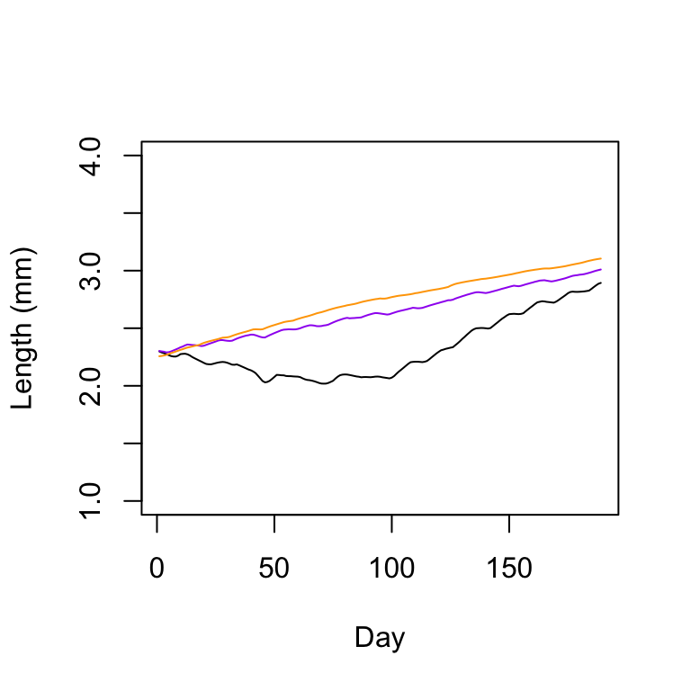
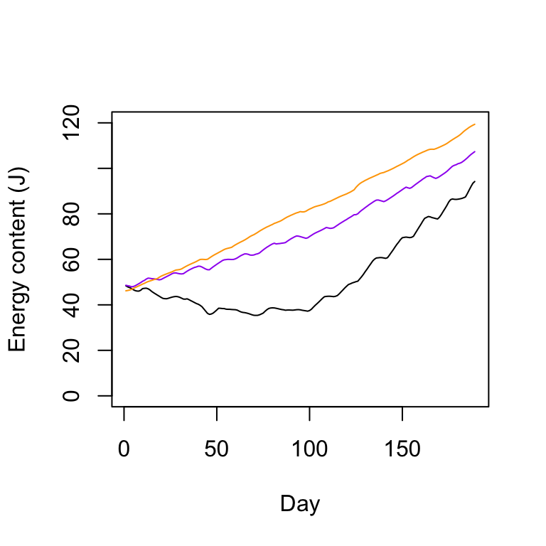
#Observed vs. predicted growth
if(timing == 1){
#setwd("~/Box/Sarah and Molly's Box/FHL data/plots/Interval 1")
# pdf("Pred_vs_Obs_int1.pdf", width=4, height=4)
means_Obslen <- tapply(obs.growth.len, as.factor(Elevation), mean)
means_Predlen <- tapply(pred.len, as.factor(Elevation), mean)
sd_Obslen <- tapply(obs.growth.len, as.factor(Elevation), sd)
sd_Predlen <- tapply(pred.len, as.factor(Elevation), sd)
par(mfrow = c(1,1))
plot(means_Predlen ~ means_Obslen, xlim = c(0,1.5), ylim = c(0,1.5),
col = c("orange","purple","black"),
#pch = c(15,16,17), for time 2
pch = c(0,1,2), #for time 1
ylab = "Predicted growth (mm)",
xlab = "Observed growth (mm)")
lines(x = c(-1,2.5),y = c(-1,2.5))
arrows(x0=means_Obslen, y0=means_Predlen-sd_Predlen, x1=means_Obslen,
y1=means_Predlen+sd_Predlen, code=0)
arrows(x0=means_Obslen-sd_Obslen, y0=means_Predlen, x1=means_Obslen+sd_Obslen,
y1=means_Predlen, code=0)
#dev.off()
}
if(timing == 2){
#setwd("~/Box/Sarah and Molly's Box/FHL data/plots/Interval 2")
#pdf("Pred_vs_Obs_int2.pdf", width=4, height=4)
means_Obslen <- tapply(obs.growth.len, as.factor(Elevation), mean)
means_Predlen <- tapply(pred.len, as.factor(Elevation), mean)
sd_Obslen <- tapply(obs.growth.len, as.factor(Elevation), sd)
sd_Predlen <- tapply(pred.len, as.factor(Elevation), sd)
par(mfrow = c(1,1))
plot(means_Predlen ~ means_Obslen, xlim = c(0,1.5), ylim = c(0,1.5),
col = c("orange","purple","black"),
pch = c(15,16,17),
#pch = c(0,1,2), #for time 1
ylab = "Predicted growth (mm)",
xlab = "Observed growth (mm)")
lines(x = c(-1,2.5),y = c(-1,2.5))
arrows(x0=means_Obslen, y0=means_Predlen-sd_Predlen, x1=means_Obslen,
y1=means_Predlen+sd_Predlen, code=0)
arrows(x0=means_Obslen-sd_Obslen, y0=means_Predlen, x1=means_Obslen+sd_Obslen,
y1=means_Predlen, code=0)
# dev.off()
}
# Physiological rates in terms of day ####
# new_intake in terms of date ####
length(datetime_int)/96[1] 198.0104pred_expose_30_dat2 <- cbind(as.data.frame(pred_expose_30)[,elev], datetime = datetime_int[1:nrow(pred_expose_30)])
intake_dat2 <- cbind(as.data.frame(intake_15min_scaled)[elev], datetime = datetime_int[1:nrow(intake_15min_scaled)])
cost_15min_dat2 <- cbind(as.data.frame(cost_15min)[elev], datetime = datetime_int[1:nrow(cost_15min)])
head(pred_expose_30_dat2) V36 V100 V121 datetime
1 0.03059254 0.03844741 0.02023924 2018-08-15 00:00:00
2 0.03109187 0.03504062 0.01353497 2018-08-15 00:15:00
3 0.02960886 0.03334050 0.00000000 2018-08-15 00:30:00
4 0.02944493 0.01498776 0.00000000 2018-08-15 00:45:00
5 0.02852466 0.01378417 0.00000000 2018-08-15 01:00:00
6 0.02730871 0.00000000 0.00000000 2018-08-15 01:15:00# Note 5.2023 - had to swap time 1 vs. time 2
if(timing ==1){
new_expose <- pred_expose_30_dat2 %>%
group_by(date = as.Date(ymd_hms(datetime))) %>%
dplyr::summarise(V1 = sum(V4),
V2 = sum(V110),
V3 = sum(V147))
new_intake <- intake_dat2 %>%
group_by(date = as.Date(ymd_hms(datetime))) %>%
dplyr::summarise(V1 = sum(V4),
V2 = sum(V110),
V3 = sum(V147))
new_aq_cost <- cost_15min_dat2 %>%
group_by(date = as.Date(ymd_hms(datetime))) %>%
dplyr::summarise(V1 = sum(V4),
V2 = sum(V110),
V3 = sum(V147))
}
if(timing == 2){
new_expose <- pred_expose_30_dat2 %>%
group_by(date = as.Date(ymd_hms(datetime))) %>%
dplyr::summarise(V1 = sum(V36),
V2 = sum(V100),
V3 = sum(V121))
new_intake <- intake_dat2 %>%
group_by(date = as.Date(ymd_hms(datetime))) %>%
dplyr::summarise(V1 = sum(V36),
V2 = sum(V100),
V3 = sum(V121))
new_aq_cost <- cost_15min_dat2 %>%
group_by(date = as.Date(ymd_hms(datetime))) %>%
dplyr::summarise(V1 = sum(V36),
V2 = sum(V100),
V3 = sum(V121))
}Warning: There was 1 warning in `group_by()`.
ℹ In argument: `date = as.Date(ymd_hms(datetime))`.
Caused by warning:
! 198 failed to parse.
There was 1 warning in `group_by()`.
ℹ In argument: `date = as.Date(ymd_hms(datetime))`.
Caused by warning:
! 198 failed to parse.
There was 1 warning in `group_by()`.
ℹ In argument: `date = as.Date(ymd_hms(datetime))`.
Caused by warning:
! 198 failed to parse.daily_SFG <- new_intake[,2:4] - new_expose[,2:4] - new_aq_cost[,2:4]
names(new_intake) <- c("date","Upper", "Mid", "Low")
names(new_expose) <- c("date","Upper", "Mid", "Low")
names(new_aq_cost) <- c("date","Upper", "Mid", "Low")
names(daily_SFG) <- c("Upper", "Mid", "Low")
#Don't plot initial and final timepoint, because not a complete timepoint
new_intake <- new_intake[2:cutoff,]
new_expose <- new_expose[2:cutoff,]
new_aq_cost <- new_aq_cost[2:cutoff,]
daily_SFG <- daily_SFG[2:cutoff,]
tail(new_intake)# A tibble: 6 × 4
date Upper Mid Low
<date> <dbl> <dbl> <dbl>
1 2019-02-11 1.07 1.46 1.85
2 2019-02-12 1.29 1.74 1.94
3 2019-02-13 1.59 2.06 1.93
4 2019-02-14 2.95 2.05 1.84
5 2019-02-15 3.13 2.05 1.81
6 2019-02-16 3.14 2.02 1.70head(new_intake)# A tibble: 6 × 4
date Upper Mid Low
<date> <dbl> <dbl> <dbl>
1 2018-08-16 1.00 1.11 1.20
2 2018-08-17 0.898 0.929 1.24
3 2018-08-18 0.877 1.25 1.40
4 2018-08-19 0.877 1.48 1.42
5 2018-08-20 1.18 1.70 1.46
6 2018-08-21 1.35 1.78 1.53dim(new_intake)[1] 185 4Plot physiological rates over time
Set axes
df_round<-new_intake %>%
mutate(modified_df = round_date(date, unit="month"))
df_round <- df_round$modified_df n_len <- length(new_intake$Low)
if(timing == 1){
#pdf("daily_physiological_rates_int1.pdf", width=6.5, height=1.5)
par(mfrow = c(1,3))
par(mar = c(1,1,1,1)+.1)
par(oma = c(1,4,1,1))
plot(new_intake$date[1:n_len-1], new_intake$Low[1:n_len-1], type = "l", ylim = c(0,4.5),yaxs = "i", xaxt="n",
col = "darkslategray", xlab = "", ylab = "Physiological rate (J / day)", bty = "n", lty = 1)
points(new_intake$date[1:n_len-1], new_aq_cost$Low[1:n_len-1], type = "l", col = "blue", lty = 1)
points(new_intake$date[1:n_len-1], new_expose$Low[1:n_len-1], type = "l", col = "darkorchid4", lty = 1, lwd = 1.5)
axis.Date(1, at=seq(min(df_round), max(df_round), by="2 mon"), format="%b")
legend(x = "topleft",
legend = c("Intake", "Aquatic cost", "Aerial cost"),
col =c("darkslategray", "blue", "darkorchid4"), lty=1:1, box.lty=0, bg="transparent", bty = "n")
plot(new_intake$date[1:n_len-1], new_intake$Mid[1:n_len-1], type = "l", ylim = c(0,4.5),yaxs = "i",
col = "darkslategray", xlab = "", ylab = "Physiological rate\n (J / day)", bty = "n", xaxt="n")
points(new_intake$date[1:n_len-1], new_aq_cost$Mid[1:n_len-1], type = "l", col = "blue")
points(new_intake$date[1:n_len-1], new_expose$Mid[1:n_len-1], type = "l", col = "darkorchid4", lwd = 1.5)
axis.Date(1, at=seq(min(df_round), max(df_round), by="2 mon"), format="%b")
plot(new_intake$date[1:n_len-1], new_intake$Upper[1:n_len-1], type = "l", ylim = c(0,4.5), yaxs = "i",
col = "darkslategray", xlab = "", ylab = "Physiological rate (J / day)", bty = "n", xaxt="n")
points(new_intake$date[1:n_len-1], new_aq_cost$Upper[1:n_len-1], type = "l", col = "blue")
points(new_intake$date[1:n_len-1], new_expose$Upper[1:n_len-1], type = "l", col = "darkorchid4", lwd = 1.5)
axis.Date(1, at=seq(min(df_round), max(df_round), by="2 mon"), format="%b")
#dev.off()
}
if(timing == 2){
#pdf("daily_physiological_rates_int2.pdf", width=6.5, height=1.5)
par(mfrow = c(1,3))
par(mar = c(1,1,1,1)+.1)
par(oma = c(1,4,1,1))
plot(new_intake$date[1:n_len-1], new_intake$Low[1:n_len-1], type = "l", ylim = c(0,4.5),yaxs = "i",
col = "darkslategray", xlab = "", ylab = "Physiological rate (J / day)", bty = "n", lty = 1, xaxt="n")
points(new_intake$date[1:n_len-1], new_aq_cost$Low[1:n_len-1], type = "l", col = "blue", lty = 1)
points(new_intake$date[1:n_len-1], new_expose$Low[1:n_len-1], type = "l", col = "darkorchid4", lty = 1, lwd = 1.5)
axis.Date(1, at=seq(min(df_round), max(df_round), by="2 mon"), format="%b")
legend(x = "topleft",
legend = c("Intake", "Aquatic cost", "Aerial cost"),
col =c("darkslategray", "blue", "darkorchid4"), lty=1:1, box.lty=0, bg="transparent", bty = "n")
plot(new_intake$date[1:n_len-1], new_intake$Mid[1:n_len-1], type = "l", ylim = c(0,4.5),yaxs = "i",
col = "darkslategray", xlab = "", ylab = "Physiological rate\n (J / day)", bty = "n", xaxt="n")
points(new_intake$date[1:n_len-1], new_aq_cost$Mid[1:n_len-1], type = "l", col = "blue")
points(new_intake$date[1:n_len-1], new_expose$Mid[1:n_len-1], type = "l", col = "darkorchid4", lwd = 1.5)
axis.Date(1, at=seq(min(df_round), max(df_round), by="2 mon"), format="%b")
plot(new_intake$date[1:n_len-1], new_intake$Upper[1:n_len-1], type = "l", ylim = c(0,4.5), yaxs = "i",
col = "darkslategray", xlab = "", ylab = "Physiological rate (J / day)", bty = "n", xaxt="n")
points(new_intake$date[1:n_len-1], new_aq_cost$Upper[1:n_len-1], type = "l", col = "blue")
points(new_intake$date[1:n_len-1], new_expose$Upper[1:n_len-1], type = "l", col = "darkorchid4", lwd = 1.5)
axis.Date(1, at=seq(min(df_round), max(df_round), by="2 mon"), format="%b")
#dev.off()
}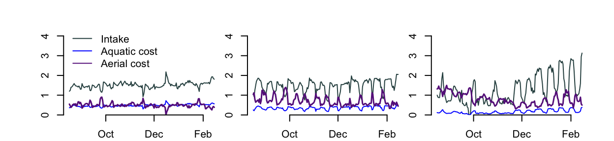
Plot Scope for Growth
if(timing == 1){
#pdf("daily_SFG_int1.pdf", width=6.5, height=1.5)
par(mfrow = c(1,3))
par(mar = c(1,1,1,1)+.1)
par(oma = c(1,4,1,1))
par(mfrow = c(1,3))
dim(daily_SFG)
plot(new_intake$date, daily_SFG$Low,type = "l", ylim = c(-.9,4.5), yaxs = "i",
col = "orange", xlab = "", ylab = "Physiological rate (J / day)", bty = "n",xaxt="n")
axis.Date(1, at=seq(min(df_round), max(df_round), by="2 mon"), format="%b")
legend(x = "topleft",
legend = c("Scope for Growth"),
col =c("orange"), lty=1:1, box.lty=0, bg="transparent", bty = "n")
plot(new_intake$date, daily_SFG$Mid,type = "l", ylim = c(-.9,4.5), yaxs = "i",
col = "orange", xlab = "", ylab = "Physiological rate (J / day)", bty = "n", xaxt="n")
axis.Date(1, at=seq(min(df_round), max(df_round), by="2 mon"), format="%b")
plot(new_intake$date, daily_SFG$Upper,type = "l", ylim = c(-.9,4.5), yaxs = "i",
col = "orange", xlab = "", ylab = "Physiological rate (J / day)", bty = "n",xaxt="n")
axis.Date(1, at=seq(min(df_round), max(df_round), by="2 mon"), format="%b")
#dev.off()
# scale_x_date(date_breaks="1 month", date_labels="%m")
}
if(timing == 2){
#pdf("daily_SFG_int2.pdf", width=6.5, height=1.5)
par(mfrow = c(1,3))
par(mar = c(1,1,1,1)+.1)
par(oma = c(1,4,1,1))
par(mfrow = c(1,3))
dim(daily_SFG)
plot(new_intake$date, daily_SFG$Low,type = "l", ylim = c(-.9,4.5), yaxs = "i",
col = "orange", xlab = "", ylab = "Physiological rate (J / day)", bty = "n", xaxt="n")
axis.Date(1, at=seq(min(df_round), max(df_round), by="2 mon"), format="%b")
legend(x = "topleft",
legend = c("Scope for Growth"),
col =c("orange"), lty=1:1, box.lty=0, bg="transparent", bty = "n")
plot(new_intake$date, daily_SFG$Mid,type = "l", ylim = c(-.9,4.5), yaxs = "i",
col = "orange", xlab = "", ylab = "Physiological rate (J / day)", bty = "n",xaxt="n")
axis.Date(1, at=seq(min(df_round), max(df_round), by="2 mon"), format="%b")
plot(new_intake$date, daily_SFG$Upper,type = "l", ylim = c(-.9,4.5), yaxs = "i",
col = "orange", xlab = "", ylab = "Physiological rate (J / day)", bty = "n",xaxt="n")
axis.Date(1, at=seq(min(df_round), max(df_round), by="2 mon"), format="%b")
#dev.off()
}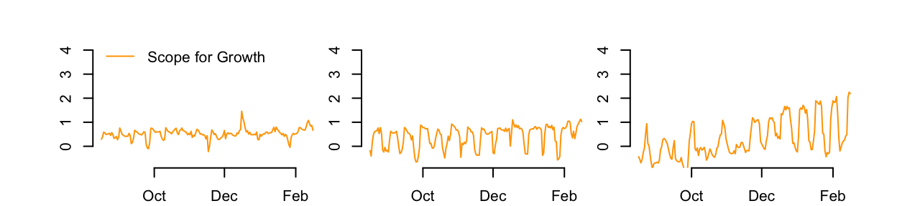
New plot that overlays cumulative SFG (5/4/23)
par(mfrow = c(1,3))
par(mar = c(1,1,1,1)+.1)
par(oma = c(1,4,1,1))
par(mfrow = c(1,3))
# pdf("daily_SFG_int_cumulative.pdf", width=6.5, height=1.5, units = "in")
if(timing == 1){
n_dates <- length(new_intake$date)+1
str(joule_mass)
new.joule_mass <- as.data.frame(lapply(joule_mass, function(x) c(x[1], x[-1] - x[1])))
plot(new_intake$date, daily_SFG$Low,type = "l", ylim = c(-1,4), yaxs = "i",
col = "orange", xlab = "", ylab = "Physiological rate (J / day)", bty = "n",xaxt="n")
par(new=TRUE)
plot(new_intake$date,new.joule_mass[2:n_dates,3], col = "black",type = "l", ylim = c(-15,70),axes=FALSE,bty = "n") #Low
axis.Date(1, at=seq(min(df_round), max(df_round), by="2 mon"), format="%b")
#axis(side = 4)
legend(x = "topleft",
legend = c("Daily SFG", "Cumulative SFG"),
col =c("orange","black"), lty=1:1, box.lty=0, bg="transparent", bty = "n")
plot(new_intake$date, daily_SFG$Mid,type = "l", ylim = c(-1,4), yaxs = "i",
col = "orange", xlab = "", ylab = "Physiological rate (J / day)", bty = "n",xaxt="n")
par(new=TRUE)
plot(new_intake$date,new.joule_mass[2:n_dates,2], col = "black",type = "l", ylim = c(-15,70),axes=FALSE,bty = "n",xaxt="n") #Low
#axis(side = 4)
axis.Date(1, at=seq(min(df_round), max(df_round), by="2 mon"), format="%b")
plot(new_intake$date, daily_SFG$Upper,type = "l", ylim = c(-1,4), yaxs = "i",
col = "orange", xlab = "", ylab = "Physiological rate (J / day)", bty = "n",xaxt="n")
par(new=TRUE)
plot(new_intake$date,new.joule_mass[2:n_dates,1], col = "black",type = "l", ylim = c(-15,70),axes=FALSE,bty = "n",xaxt="n") #Low
axis(side = 4)
axis.Date(1, at=seq(min(df_round), max(df_round), by="2 mon"), format="%b")
}
# dev.off()
# pdf("daily_SFG_int2.pdf", width=6.5, height=1.5)
# pngfile <- fs::path(knitr::fig_path(), "scaling.png")
# agg_png(pngfile, width = 6.5, height = 1.5, units = "in", res = 300, scaling = 3)
# plot(p)
# invisible(dev.off())
# knitr::include_graphics(pngfile)if(timing == 2){
#pdf("daily_SFG_int2.pdf", width=6.5, height=1.5)
par(mfrow = c(1,3))
par(mar = c(1,1,1,1)+.1)
par(oma = c(1,4,1,1))
par(mfrow = c(1,3))
n_dates <- length(new_intake$date)+1
length(new_intake$date)
str(joule_mass)
new.joule_mass <- as.data.frame(lapply(joule_mass, function(x) c(x[1], x[-1] - x[1])))
plot(new_intake$date, daily_SFG$Low,type = "l", ylim = c(-1,4), yaxs = "i",
col = "orange", xlab = "", ylab = "Physiological rate (J / day)", bty = "n",xaxt="n")
par(new=TRUE)
plot(new_intake$date,new.joule_mass[2:n_dates,3], col = "black",type = "l", ylim = c(-15,70),axes=FALSE,bty = "n",xaxt="n") #Low
#axis(side = 4)
axis.Date(1, at=seq(min(df_round), max(df_round), by="2 mon"), format="%b")
legend(x = "topleft",
legend = c("Daily SFG", "Cumulative SFG"),
col =c("orange","black"), lty=1:1, box.lty=0, bg="transparent", bty = "n")
plot(new_intake$date, daily_SFG$Mid,type = "l", ylim = c(-1,4), yaxs = "i",
col = "orange", xlab = "", ylab = "Physiological rate (J / day)", bty = "n",xaxt="n")
par(new=TRUE)
plot(new_intake$date,new.joule_mass[2:n_dates,2], col = "black",type = "l", ylim = c(-15,70),axes=FALSE,bty = "n",xaxt="n") #Low
#axis(side = 4)
axis.Date(1, at=seq(min(df_round), max(df_round), by="2 mon"), format="%b")
plot(new_intake$date, daily_SFG$Upper,type = "l", ylim = c(-1,4), yaxs = "i",
col = "orange", xlab = "", ylab = "Physiological rate (J / day)", bty = "n",xaxt="n")
par(new=TRUE)
plot(new_intake$date,new.joule_mass[2:n_dates,1], col = "black",type = "l", ylim = c(-15,70),axes=FALSE,bty = "n",xaxt="n") #Low
axis(side = 4)
#dev.off()
axis.Date(1, at=seq(min(df_round), max(df_round), by="2 mon"), format="%b")
}'data.frame': 189 obs. of 3 variables:
$ V36 : num 48.4 47.9 47.6 47.2 46.7 ...
$ V100: num 48.6 48.4 48.3 47.9 48 ...
$ V121: num 46.2 46.3 46.5 46.8 47.2 ...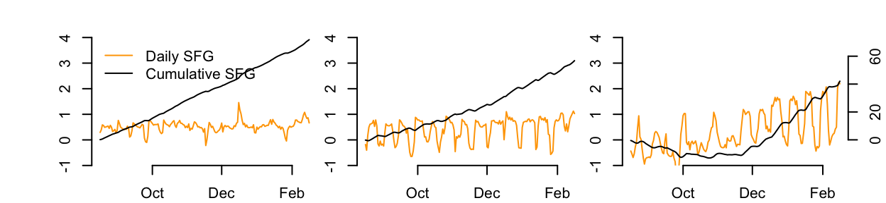
# Calc daily air and water temp ####
# Look to see if/where data is missing
plot(air.temp.2$datetime,air.temp.2$Low, type = "p", pch = ".", xlim = c(as.POSIXct("2018-08-10"),as.POSIXct("2018-12-01")))
points(water.temp.2$datetime,water.temp.2$Low, type = "p", pch = ".", xlim = c(as.POSIXct("2018-08-10"),as.POSIXct("2018-11-01")))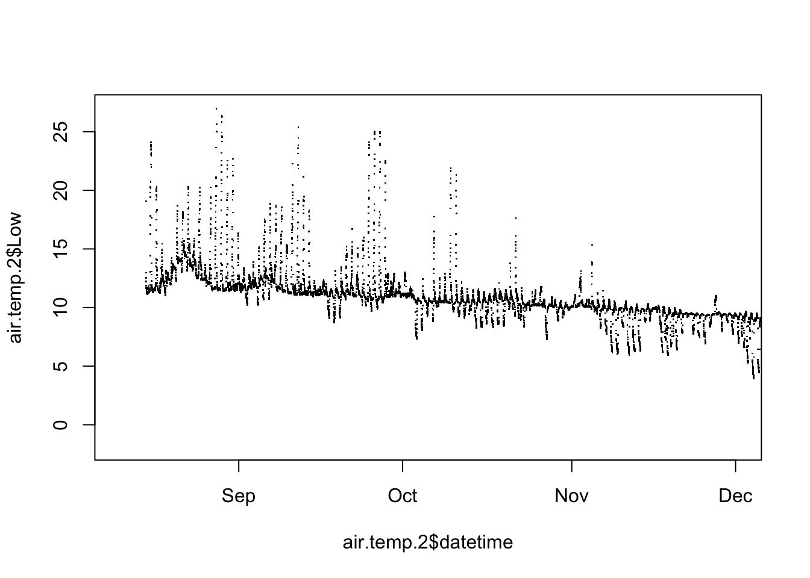
# Aug 22 - Aug 25
if(timing == 1){
air.temp.int <- air.temp.1
water.temp.int <- water.temp.1
#setwd("~/Box/Sarah and Molly's Box/FHL data/plots/Interval 1")
}
if(timing == 2){
air.temp.int <- air.temp.2
water.temp.int <- water.temp.2
#setwd("~/Box/Sarah and Molly's Box/FHL data/plots/Interval 2")
}
daily_air_temp <- air.temp.int %>%
group_by(date = as.Date(ymd_hms(datetime))) %>%
dplyr::summarise(Low = mean(Low, na.rm = TRUE),
Mid = mean(Mid, na.rm = TRUE),
Upper = mean(Upper, na.rm = TRUE))Warning: There was 1 warning in `group_by()`.
ℹ In argument: `date = as.Date(ymd_hms(datetime))`.
Caused by warning:
! 199 failed to parse.daily_air_temp# A tibble: 199 × 4
date Low Mid Upper
<date> <dbl> <dbl> <dbl>
1 2018-08-15 17.5 17.9 16.9
2 2018-08-16 14.3 16.2 15.7
3 2018-08-17 12.3 15.7 15.7
4 2018-08-18 11.9 13.8 16.8
5 2018-08-19 12.6 13.2 15.7
6 2018-08-20 14.5 15.2 16.4
7 2018-08-21 15.1 15.9 16.6
8 2018-08-22 15.9 16.8 16.7
9 2018-08-23 14.4 15.3 15.2
10 2018-08-24 15.9 17.7 16.0
# ℹ 189 more rowsdaily_water_temp <- water.temp.int %>%
group_by(date = as.Date(ymd_hms(datetime))) %>%
dplyr::summarise(Low = mean(Low, na.rm = TRUE),
Mid = mean(Mid, na.rm = TRUE),
Upper = mean(Upper, na.rm = TRUE))Warning: There was 1 warning in `group_by()`.
ℹ In argument: `date = as.Date(ymd_hms(datetime))`.
Caused by warning:
! 199 failed to parse.# Upper 75% quantile ####
#A quartile is the value of the quantile at the probabilities 0.25, 0.5 and 0.75.
#https://stackoverflow.com/questions/26532566/quantile-vs-quartile-in-lay-terms
daily_air_temp_quant <- air.temp.int %>%
group_by(date = as.Date(ymd_hms(datetime))) %>%
dplyr::summarise(Low = quantile(Low, probs = 0.75, na.rm = TRUE),
Mid = quantile(Mid, probs = 0.75, na.rm = TRUE),
Upper = quantile(Upper, probs = 0.75, na.rm = TRUE))Warning: There was 1 warning in `group_by()`.
ℹ In argument: `date = as.Date(ymd_hms(datetime))`.
Caused by warning:
! 199 failed to parse.daily_air_temp_quant_low <- air.temp.int %>%
group_by(date = as.Date(ymd_hms(datetime))) %>%
dplyr::summarise(Low = quantile(Low, probs = 0.25, na.rm = TRUE),
Mid = quantile(Mid, probs = 0.25, na.rm = TRUE),
Upper = quantile(Upper, probs = 0.25, na.rm = TRUE))Warning: There was 1 warning in `group_by()`.
ℹ In argument: `date = as.Date(ymd_hms(datetime))`.
Caused by warning:
! 199 failed to parse.daily_air_temp <- daily_air_temp[2:cutoff,]
daily_water_temp <- daily_water_temp[2:cutoff,]
daily_air_temp_quant <- daily_air_temp_quant[2:cutoff,]
daily_air_temp_quant_low <- daily_air_temp_quant_low[2:cutoff,]
# Plot temp, 6.5X1.5 ####
# Note dimensions must be called within pdf() - also saving as a .pdf through th GUI is broken. #pdf("temp_incl_3Q.pdf", width=6.5, height=1.5)
par(mfrow = c(1,3))
par(mar = c(1,1,1,1)+.1)
par(oma = c(1,4,1,1))
min(daily_air_temp$Mid, na.rm = TRUE)[1] 0.1415278plot(daily_air_temp$date, daily_air_temp$Low, type = "l", ylim = c(0,32),yaxs = "i",
col = "darkorchid4", xlab = "", ylab = expression(paste("Temp (",degree,"C)")), bty = "n", lty = 1, xaxt="n")
points(daily_water_temp$date, daily_water_temp$Low, type = "l", col = "blue", lty = 1)
points(daily_air_temp_quant$date, daily_air_temp_quant$Low, type = "l", yaxs = "i",
col = "darkred", xlab = "", ylab = "Physiological rate (J / day)", bty = "n", lty = 3)
axis.Date(1, at=seq(min(df_round), max(df_round), by="2 mon"), format="%b")
plot(daily_air_temp$date, daily_air_temp$Mid, type = "l", ylim = c(0,32),yaxs = "i",
col = "darkorchid4", xlab = "", ylab = "", bty = "n", xaxt="n")
points(daily_water_temp$date, daily_water_temp$Mid, type = "l", col = "blue")
points(daily_air_temp_quant$date, daily_air_temp_quant$Mid, type = "l", yaxs = "i",
col = "darkred", xlab = "", ylab = "Physiological rate (J / day)", bty = "n", lty = 3)
axis.Date(1, at=seq(min(df_round), max(df_round), by="2 mon"), format="%b")
plot(daily_air_temp$date, daily_air_temp$Upper, type = "l", ylim = c(0,32), yaxs = "i",
col = "darkorchid4", xlab = "", ylab = "", bty = "n", xaxt="n")
points(daily_water_temp$date, daily_water_temp$Upper, type = "l", col = "blue")
points(daily_air_temp_quant$date, daily_air_temp_quant$Upper, type = "l", yaxs = "i",
col = "darkred", xlab = "", ylab = "Physiological rate (J / day)", bty = "n", lty = 3)
axis.Date(1, at=seq(min(df_round), max(df_round), by="2 mon"), format="%b")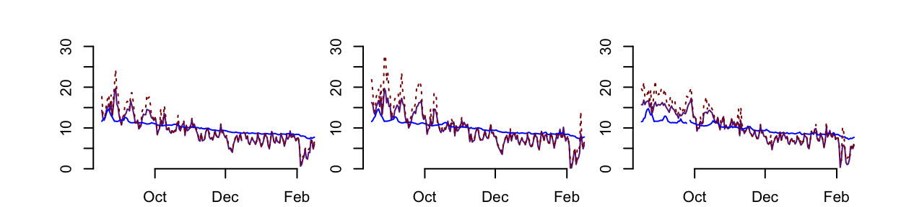
#dev.off()#pdf("temp_incl_3Q.pdf", width=6.5, height=1.5)
par(mfrow = c(1,3))
par(mar = c(1,1,1,1)+.1)
par(oma = c(1,4,1,1))
min(daily_air_temp$Mid, na.rm = TRUE)[1] 0.1415278plot(daily_air_temp$date, daily_air_temp$Low, type = "l", ylim = c(0,32),yaxs = "i",
col = "darkorchid4", xlab = "", ylab = expression(paste("Temp (",degree,"C)"), xaxt="n"), bty = "n", lty = 1, xaxt="n")
points(daily_water_temp$date, daily_water_temp$Low, type = "l", col = "blue", lty = 1)
points(daily_air_temp_quant$date, daily_air_temp_quant$Low, type = "l", yaxs = "i",
col = "darkred", xlab = "", ylab = "Physiological rate (J / day)", bty = "n", lty = 3)
axis.Date(1, at=seq(min(df_round), max(df_round), by="2 mon"), format="%b")
plot(daily_air_temp$date, daily_air_temp$Mid, type = "l", ylim = c(0,32),yaxs = "i",
col = "darkorchid4", xlab = "", ylab = "", bty = "n", xaxt="n")
points(daily_water_temp$date, daily_water_temp$Mid, type = "l", col = "blue")
points(daily_air_temp_quant$date, daily_air_temp_quant$Mid, type = "l", yaxs = "i",
col = "darkred", xlab = "", ylab = "Physiological rate (J / day)", bty = "n", lty = 3)
axis.Date(1, at=seq(min(df_round), max(df_round), by="2 mon"), format="%b")
plot(daily_air_temp$date, daily_air_temp$Upper, type = "l", ylim = c(0,32), yaxs = "i",
col = "darkorchid4", xlab = "", ylab = "", bty = "n", xaxt="n")
points(daily_water_temp$date, daily_water_temp$Upper, type = "l", col = "blue")
points(daily_air_temp_quant$date, daily_air_temp_quant$Upper, type = "l", yaxs = "i",
col = "darkred", xlab = "", ylab = "Physiological rate (J / day)", bty = "n", lty = 3)
axis.Date(1, at=seq(min(df_round), max(df_round), by="2 mon"), format="%b")#dev.off()#pdf("temp_legend_incl_3Q.pdf", width=6.5, height=1.5)
par(mfrow = c(1,3))
par(mfrow = c(1,3))
par(mar = c(1,1,1,1)+.1)
par(oma = c(1,4,1,1))
plot(NULL ,xaxt='n',yaxt='n',bty='n',ylab='',xlab='', xlim=0:1, ylim=0:1)
legend(x = "topleft",
legend = c("75%-ile low tide temp", "Low tide temp", "Water temp"),
col =c("darkred","darkorchid4", "blue"), lty=c(3,1,1), box.lty=0, bg="transparent", bty = "n")
#dev.off()if(timing == 1){
air.temp.interval <- air.temp.1
water.temp.interval <- water.temp.1
food.int <- water.temp.1$food
datetime.int <- water.temp.1$datetime
#setwd("~/Box/Sarah and Molly's Box/FHL data/plots/Interval 1")
}
if(timing == 2){
air.temp.interval <- air.temp.2
water.temp.interval <- water.temp.2
food.int <- water.temp.2$food
datetime.int <- water.temp.2$datetime
#setwd("~/Box/Sarah and Molly's Box/FHL data/plots/Interval 2")
}
air.temp.day <- cbind(air.temp.interval,day = yday(air.temp.interval$datetime))
air.temp_count_U <- tapply(!is.na(air.temp.day[,"Upper"]),air.temp.day$day, sum, na.rm = TRUE)
air.temp_count_M <- tapply(!is.na(air.temp.day[,"Mid"]),air.temp.day$day, sum, na.rm = TRUE)
air.temp_count_L <- tapply(!is.na(air.temp.day[,"Low"]),air.temp.day$day, sum, na.rm = TRUE)
air.temp.count <- data.frame(
Upper = air.temp_count_U,
Mid = air.temp_count_M,
Low = air.temp_count_L
)
water.temp.day <- cbind(water.temp.interval,day = yday(water.temp.interval$datetime))
water.temp_count_U <- tapply(!is.na(water.temp.day[,"Upper"]),water.temp.day$day, sum, na.rm = TRUE)
water.temp_count_M <- tapply(!is.na(water.temp.day[,"Mid"]),water.temp.day$day, sum, na.rm = TRUE)
water.temp_count_L <- tapply(!is.na(water.temp.day[,"Low"]),water.temp.day$day, sum, na.rm = TRUE)
water.temp.count <- data.frame(
Upper = water.temp_count_U,
Mid = water.temp_count_M,
Low = water.temp_count_L
)
str(water.temp.count)'data.frame': 199 obs. of 3 variables:
$ Upper: int 15 29 52 55 53 56 52 47 51 45 ...
$ Mid : int 50 56 59 61 60 62 60 56 60 63 ...
$ Low : int 62 61 64 67 66 68 66 63 66 69 ...water.temp.count Upper Mid Low
1 15 50 62
2 29 56 61
3 52 59 64
4 55 61 67
5 53 60 66
6 56 62 68
7 52 60 66
8 47 56 63
9 51 60 66
10 45 63 69
11 28 61 68
12 27 58 70
13 24 33 73
14 24 35 68
15 27 54 73
16 34 63 71
17 57 63 69
18 57 63 69
19 56 63 67
20 54 60 64
21 55 61 64
22 52 58 62
23 37 62 66
24 33 47 64
25 21 48 60
26 19 32 56
27 20 28 50
28 19 31 64
29 22 59 67
30 45 61 67
31 51 60 65
32 55 60 66
33 53 60 66
34 53 60 66
35 53 60 66
36 42 60 66
37 29 59 65
38 18 49 65
39 19 45 66
40 18 47 64
41 19 40 68
42 20 47 74
43 24 56 77
44 29 65 75
45 54 65 72
46 56 64 70
47 55 62 66
48 52 58 64
49 38 57 61
50 31 57 62
51 31 52 66
52 26 40 56
53 25 44 56
54 22 45 57
55 18 40 56
56 18 43 71
57 14 59 69
58 21 58 67
59 21 56 66
60 0 0 0
227 18 42 61
228 19 40 59
229 17 33 59
230 16 43 65
231 16 50 65
232 20 55 63
233 23 55 63
234 31 56 64
235 37 58 64
236 27 57 64
237 22 58 65
238 17 56 66
239 15 49 66
240 12 46 68
241 13 43 65
242 14 42 60
243 14 38 60
244 14 37 71
245 14 43 66
246 16 54 63
247 22 53 61
248 24 54 61
249 29 55 61
250 30 57 63
251 30 59 64
252 28 51 68
253 28 46 69
254 24 43 58
255 19 41 57
256 16 43 61
257 14 44 69
258 22 59 68
259 27 59 67
260 12 54 63
261 12 52 62
262 11 52 62
263 11 52 63
264 12 48 66
265 15 53 68
266 10 40 67
267 8 35 55
268 0 32 51
269 0 34 50
270 1 38 55
271 16 46 71
272 28 63 71
273 33 61 69
274 42 60 68
275 43 59 65
276 42 55 63
277 18 56 64
278 16 57 65
279 21 52 68
280 13 41 60
281 19 42 57
282 24 44 59
283 22 44 58
284 23 44 69
285 23 48 66
286 20 51 64
287 13 54 62
288 14 52 61
289 17 49 60
290 19 47 62
291 16 34 64
292 13 28 66
293 12 25 69
294 13 38 65
295 13 40 61
296 18 48 66
297 22 46 68
298 29 52 71
299 35 64 68
300 33 60 65
301 47 61 66
302 43 58 64
303 37 55 61
304 27 56 63
305 23 54 62
306 21 50 67
307 16 27 58
308 16 43 61
309 15 41 59
310 15 43 62
311 19 43 66
312 16 44 64
313 21 56 62
314 24 56 61
315 19 54 60
316 20 51 59
317 23 52 60
318 24 50 61
319 22 36 58
320 19 32 63
321 15 27 40
322 16 26 47
323 16 26 60
324 15 46 71
325 32 63 70
326 45 63 68
327 56 63 69
328 54 60 66
329 51 58 63
330 53 59 63
331 55 61 66
332 53 60 65
333 48 60 66
334 27 60 68
335 24 33 73
336 21 30 61
337 17 39 66
338 16 45 66
339 26 59 64
340 32 58 64
341 45 58 63
342 50 58 63
343 49 58 63
344 50 59 63
345 47 58 64
346 44 60 66
347 31 57 66
348 35 61 71
349 29 60 71
350 31 41 96
351 29 56 87
352 52 71 82
353 51 65 73
354 54 62 68
355 57 63 68
356 53 59 63
357 56 62 66
358 54 59 64
359 54 59 63
360 44 58 63
361 35 53 63
362 23 40 63
363 25 32 69
364 21 30 58
365 17 27 56water.temp.count$Upper[is.nan(water.temp.count$Upper)] <- NA
water.temp.count$Mid[is.nan(water.temp.count$Mid)] <- NA
water.temp.count$Low[is.nan(water.temp.count$Low)] <- NA
air.temp.count$Low[is.nan(air.temp.count$Low)] <- NA
air.temp.count$Mid[is.nan(air.temp.count$Mid)] <- NA
air.temp.count$Upper[is.nan(air.temp.count$Upper)] <- NA
time.submerged <- water.temp.count / (water.temp.count + air.temp.count)
# time.submerged[water.temp.count$Upper<=10 |air.temp.count$Upper<=18,"Upper"]<- NA #Wow - actually there is one day with <10 intervals submerged - that is 2.5 hours.
# time.submerged[water.temp.count$Mid<=10 |air.temp.count$Mid<=18,"Mid"]<- NA
# time.submerged[water.temp.count$Low<=10 |air.temp.count$Low<=18,"Low"]<- NA
time.submerged[water.temp.count$Upper+air.temp.count$Upper<=95,"Upper"]<- NA
time.submerged[water.temp.count$Mid+air.temp.count$Mid<=95,"Mid"]<- NA
time.submerged[water.temp.count$Low+air.temp.count$Low<=95,"Low"]<- NA
plot(time.submerged$Low, ylim = c(0,30), type = 'b')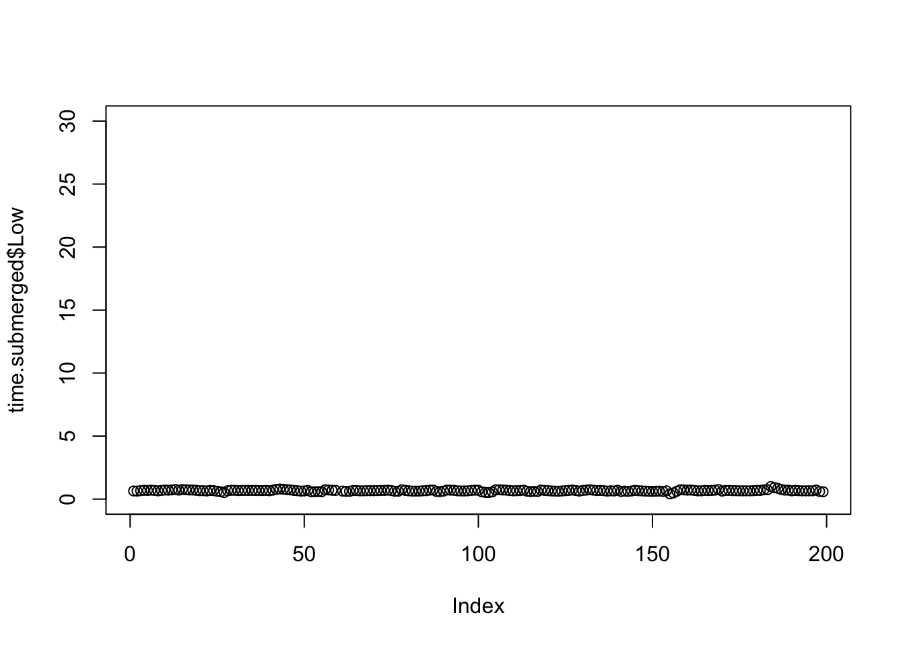
plot(air.temp.count$Upper+water.temp.count$Upper, ylim = c(0,96), type = 'l')
plot(air.temp.count$Upper+water.temp.count$Upper, ylim = c(0,96), type = 'l')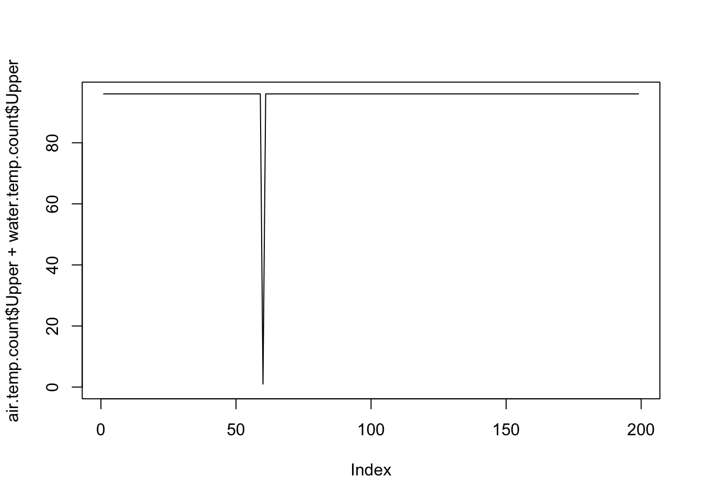
plot(air.temp.count$Upper+water.temp.count$Upper, xlim = c(180,200), ylim = c(0,96), type = 'b')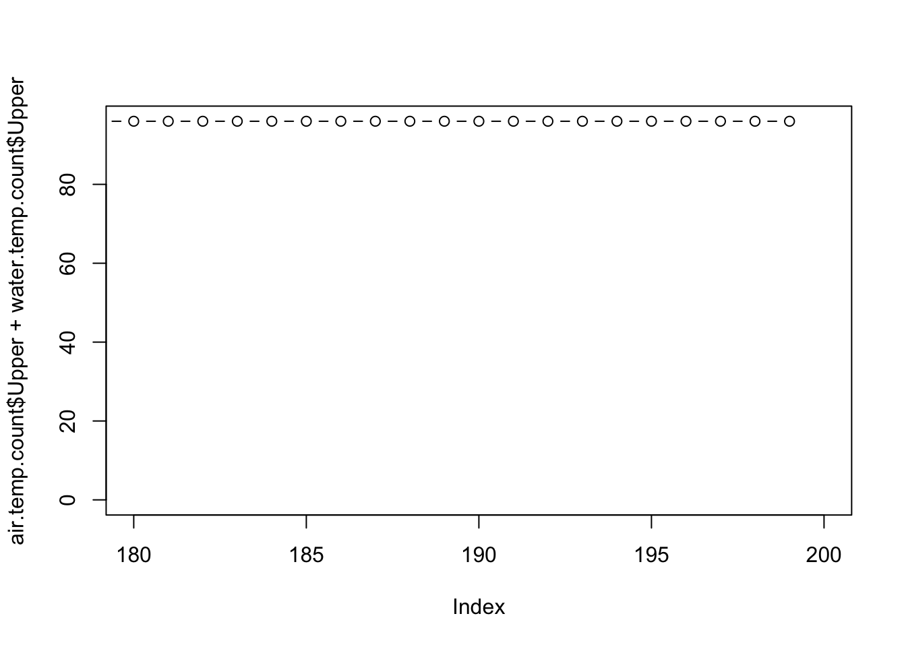
plot(air.temp.count$Upper+water.temp.count$Upper, xlim = c(195,200), ylim = c(0,96), type = 'b')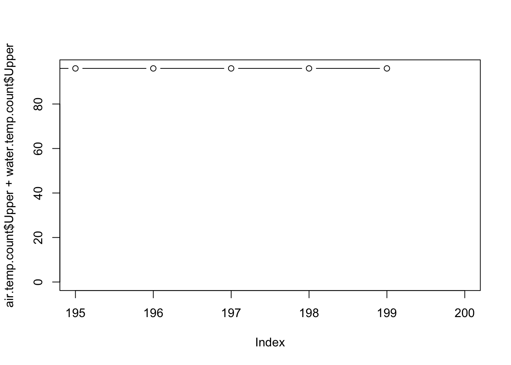
# Plot time submerged, pretty version LMU, 6.5X1.5 dim ####
#setwd("~/Documents/GitHub/Bglandula_FHL_energetics/plots")
#pdf("submergence_time2.pdf", width=6.5, height=1.5)
par(mfrow = c(1,3))
par(mar = c(1,1,1,1)+.1)
par(oma = c(1,4,1,1))
par(mfrow = c(1,3))
plot(new_intake$date, time.submerged$Low[2:cutoff],type = "l", ylim = c(0,1), yaxs = "i",
col = "black", xlab = "", ylab = "Physiological rate (J / day)", bty = "n", xaxt="n")
lines(as.Date(water.temp.int$datetime), food.int/(food.int+par[3]), cex = .5,
xlab = "", ylim = c(0,1), yaxs = "i", type = "l", lty = 3, bty = "n", ylab = "Food availability", col = "green")
#axis(side = 4, at = pretty(range(c(0,1)))) # Add second axis
axis.Date(1, at=seq(min(df_round), max(df_round), by="2 mon"), format="%b")
legend(x = "bottomleft",
legend = c("Food availability","Time submerged"),
col =c("green","black"), lty=c(3,1), box.lty=0, bg="transparent", bty = "n")
plot(new_intake$date, time.submerged$Mid[2:cutoff],type = "l", ylim = c(0,1), yaxs = "i",
col = "black", xlab = "", ylab = "Physiological rate (J / day)", bty = "n", xaxt="n")
lines(as.Date(water.temp.int$datetime), food.int/(food.int+par[3]), cex = .5,
xlab = "", ylim = c(0,1), yaxs = "i", type = "l", lty = 3, bty = "n", ylab = "Food availability", col = "green")
#axis(side = 4, at = pretty(range(c(0,1)))) # Add second axis
axis.Date(1, at=seq(min(df_round), max(df_round), by="2 mon"), format="%b")
plot(new_intake$date, time.submerged$Upper[2:cutoff],type = "l", ylim = c(0,1), yaxs = "i",
col = "black", xlab = "", ylab = "Physiological rate (J / day)", bty = "n", xaxt="n")
lines(as.Date(water.temp.int$datetime), food.int/(food.int+par[3]), cex = .5,
xlab = "", ylim = c(0,1), yaxs = "i", type = "l", lty = 3, bty = "n", ylab = "Food availability", col = "green")
#axis(side = 4, at = pretty(range(c(0,1)))) # Add second axis
mtext("Food availability (unitless)", side = 4, line = 3)
axis.Date(1, at=seq(min(df_round), max(df_round), by="2 mon"), format="%b")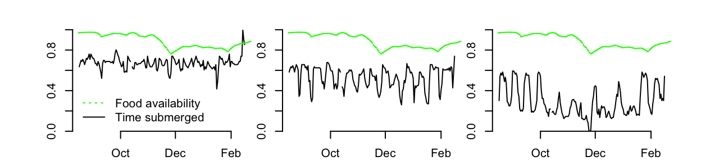
#dev.off()# Plot food over time ####
#setwd("~/Box/Sarah and Molly's Box/FHL data/plots/Interval 1 and 2")
#pdf("Food availability over time_int1and2.pdf", width=6.5*1.5, height=1.5*1.5)
par(mfrow = c(1,2))
par(mar = c(1,4,1,5)+.1)
par(oma = c(1,2,1,2))
# par(mar = c(5, 4, 4, 5) + 0.3) # Additional space for second y-axis
# plot(x, y1, pch = 16, col = 2) # Create first plot
# par(new = TRUE) # Add new plot
# plot(x, y2, pch = 17, col = 3, # Create second plot without axes
# axes = FALSE, xlab = "", ylab = "")
# axis(side = 4, at = pretty(range(y2))) # Add second axis
# mtext("y2", side = 4, line = 3)
par(new = FALSE)
par(mfrow = c(1,2))
plot(water.temp.1$datetime, food.list[[1]]/(food.list[[1]]+par[3]), cex = .5,
ylim = c(0,1), yaxs = "i",type = "l",lty = 3, bty = "n", ylab = "Food availability", xlab = "", col = "green")
par(new = TRUE)
plot(water.temp.1$datetime, food.list[[1]], ylim = c(0,20), axes = FALSE, cex = .5,
ylab = "", yaxs = "i", type = "l",lty = 2, bty = "n", xlab = "") # Add new plot
axis(side = 4, at = pretty(range(food.list[[1]]))) # Add second axis
mtext("ug / L Chl", side = 4, line = 3)
axis.Date(1, at=seq(min(df_round), max(df_round), by="2 mon"), format="%b")
par(new = FALSE)
df_round.2<-water.temp.2 %>%
mutate(modified_df = round_date(datetime, unit="month"))
df_round.2 <- df_round.2$modified_df
plot(water.temp.2$datetime, food.list[[2]]/(food.list[[2]]+par[3]), cex = .5,
xlab = "", ylim = c(0,1), yaxs = "i", type = "l", lty = 3, bty = "n", ylab = "Food availability", col = "green")
par(new = TRUE)
plot(water.temp.2$datetime, food.list[[2]], ylim = c(0,20), axes = FALSE,cex = .5,
ylab = "", yaxs = "i", type = "l", lty = 2, bty = "n", xlab = "")
axis(side = 4, at = pretty(range(food.list[[1]]))) # Add second axis
mtext("ug / L Chl", side = 4, line = 3)
axis.Date(1, at=seq(min(df_round.2), max(df_round.2), by="2 mon"), format="%b")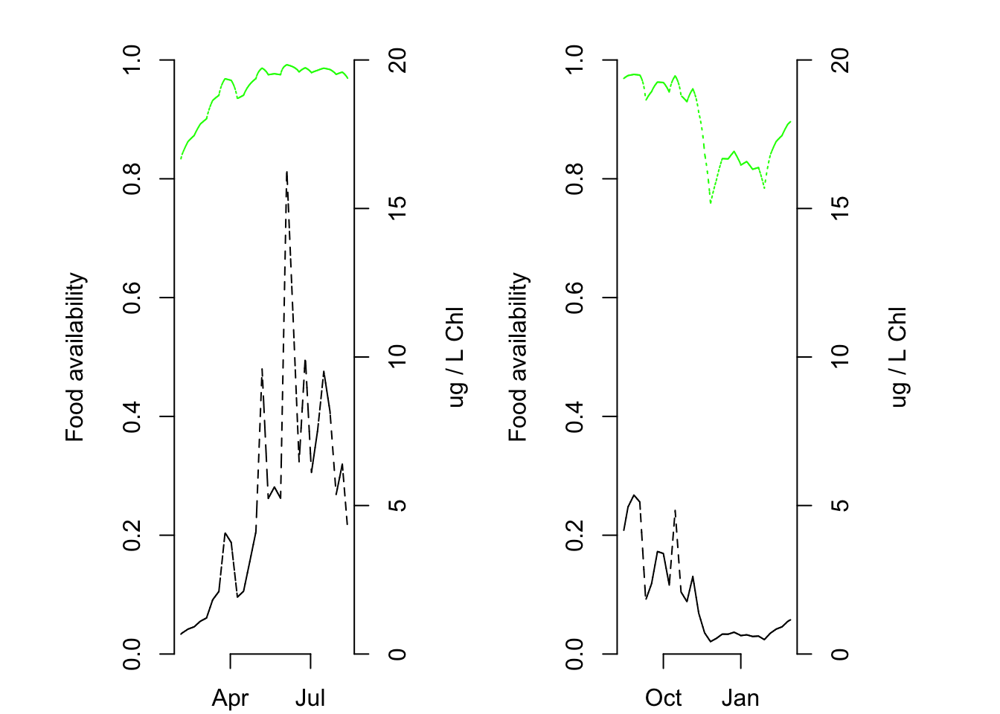
par(new = FALSE)
#dev.off()